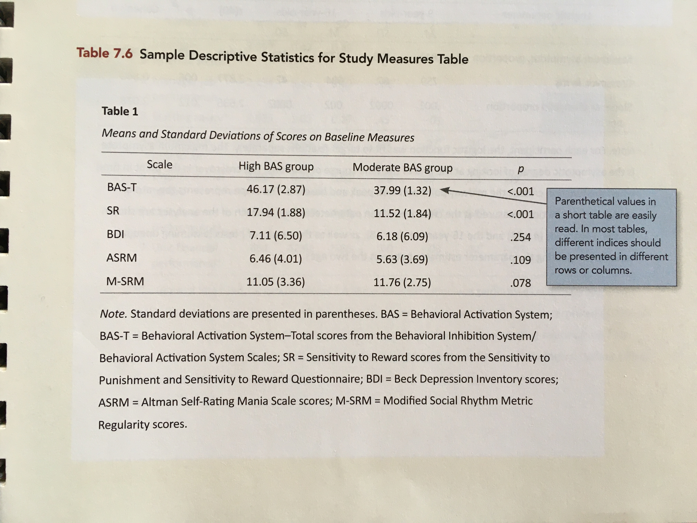
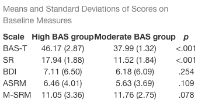
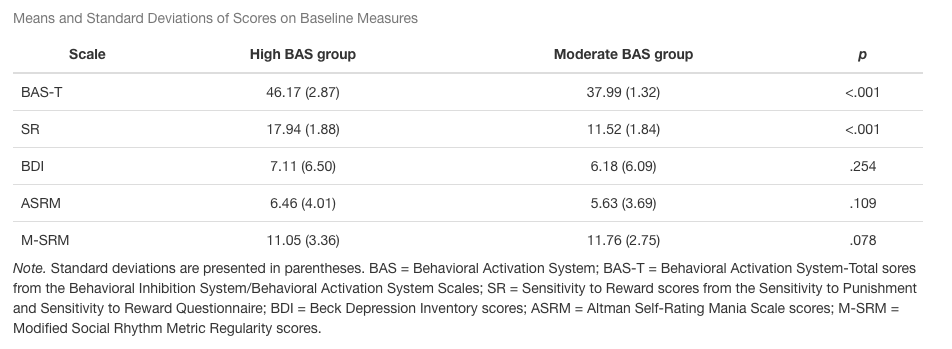
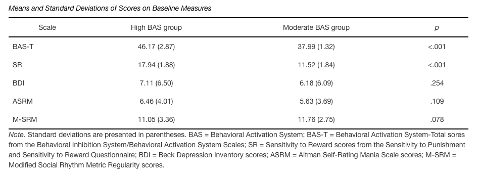
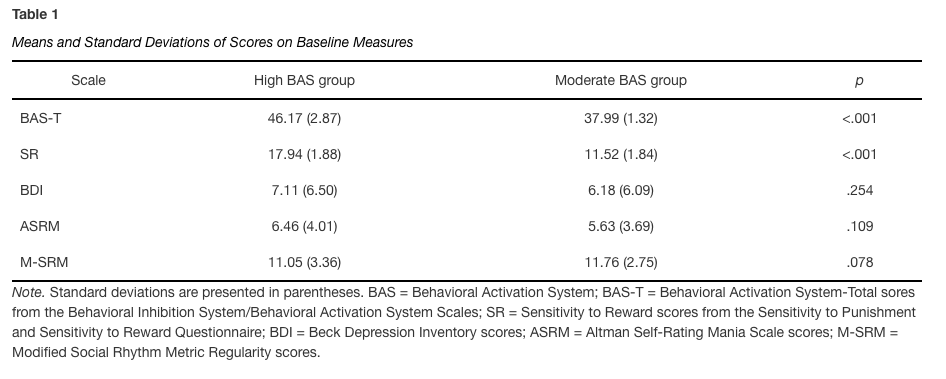

---
title: "Untitled"
author: "Andrew Zieffler"
date: "1/12/2020"
output: html_document
---./assets/body-header.qmd
I will try to replicate the the following table from the 7th edition of the APA Publication Manual.

Table 7.6 from the 7th edition of the APA Publication Manual (p. 213).
My Process
I begin by creating an RMarkdown document that is rendered to HTML.
In the RMarkdown body, I will load a few packages and set up a data frame to mimic the content from our goal table.
# Load libraries
library(knitr)
library(kableExtra)
library(tidyverse)
# Create table data
tab_01 = data.frame(
scale = c("BAS-T", "SR", "BDI", "ASRM", "M-SRM"),
high = c("46.17 (2.87)", "17.94 (1.88)", "7.11 (6.50)",
"6.46 (4.01)", "11.05 (3.36)"),
moderate = c("37.99 (1.32)", "11.52 (1.84)", "6.18 (6.09)",
"5.63 (3.69)", "11.76 (2.75)"),
p = c("<.001", "<.001", ".254", ".109", ".078")
)We can now use the kable() function to rename the columns, set alignment for each column, and set a caption. Two important things:
- The
format=argument is now set to `html’ - The
col.names=argument can include Markdown syntax in the quoted names. In this case, thepis surrounded by single asterisks, which will make it italics.
kable(
tab_01,
format = "html",
col.names = c("Scale", "High BAS group", "Moderate BAS group", "*p*"),
align = c("l", "c", "c", "c"),
caption = "Means and Standard Deviations of Scores on Baseline Measures"
)
Now I will use functions from the kableExtra package to make this prettier.
kable(
tab_01,
format = "html",
col.names = c("Scale", "High BAS group", "Moderate BAS group", "*p*"),
align = c("l", "c", "c", "c"),
caption = "Means and Standard Deviations of Scores on Baseline Measures"
) %>%
kable_styling(full_width = TRUE) %>%
row_spec(row = 0, align = "c") %>%
footnote(
general_title = "Note.",
general = "Standard deviations are presented in parentheses. BAS = Behavioral Activation System; BAS-T = Behavioral Activation System-Total sores from the Behavioral Inhibition System/Behavioral Activation System Scales; SR = Sensitivity to Reward scores from the Sensitivity to Punishment and Sensitivity to Reward Questionnaire; BDI = Beck Depression Inventory scores; ASRM = Altman Self-Rating Mania Scale scores; M-SRM = Modified Social Rhythm Metric Regularity scores.",
footnote_as_chunk = TRUE
)
Styling the Table Using CSS
This is pretty good, except for the borders (we have several horizontal lines that need to be deleted, and we need to draw borders above and below the header row and at the bottom of the table body) and the header row (which is bold). In an HTML document, we can change styles by including a Cascading Style Sheet file (CSS file).
The first thing we need to do is create a CSS file and save it in the same folder/directory as your RMD document. To do this,
- Under the RStudio
Filemenu, selectNew File > Text File
Save this file as table_style.css in the exact same folder as your RMD file. The file extension css indicate that this is a CSS file.
Next, we need to tell your RMarkdown file to look at this file for its styling rules. We do this in the YAML of your RMD document. Change your YAML as follows:
---
title: "Untitled"
author: "Andrew Zieffler"
date: "1/12/2020"
output:
html_document:
css: table-style.css
---Now we can our styling rules to the CSS file. You can add the following syntax to table-style.css.
/** Change border color to black **/
.table>thead>tr>th {
border-color: black;
}
/** Remove borders within the table body **/
.table>tbody>tr>td {
border: none;
}
/** Add a top border to the table header row **/
.table thead tr:first-child {
border-top: 2px solid black;
}
/** Add a bottom border to the table body **/
.table tbody tr:last-child {
border-bottom: 2px solid black;
}
/** Make the table header row a normal weight; not bold **/
.table th{
font-weight: normal;
}
/** Make the caption italic and black **/
.table caption{
font-style: italic;
color: black;
}Save this and then re-knit your RMD file. Your table should now look like the following:

Finally, to add the table numbering, we manually add Markdown formatted text above the code chunk that corresponds to our table name. This should be outside the code chunk!
**Table 1**Which gives us the following:
